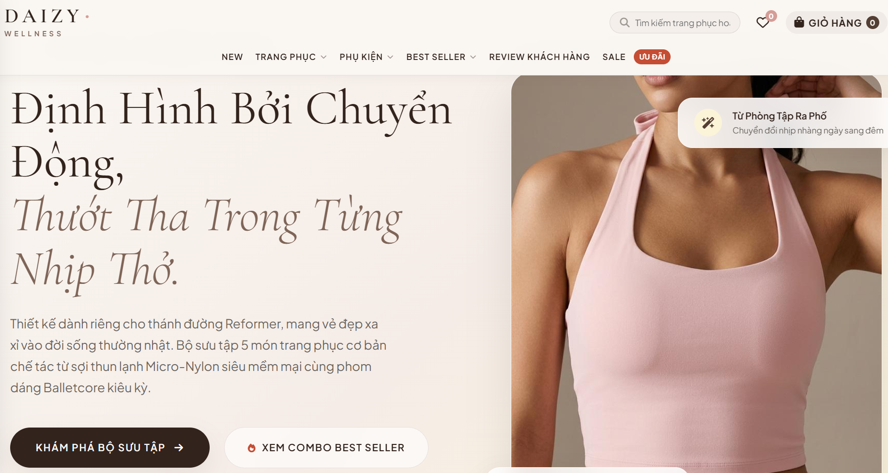
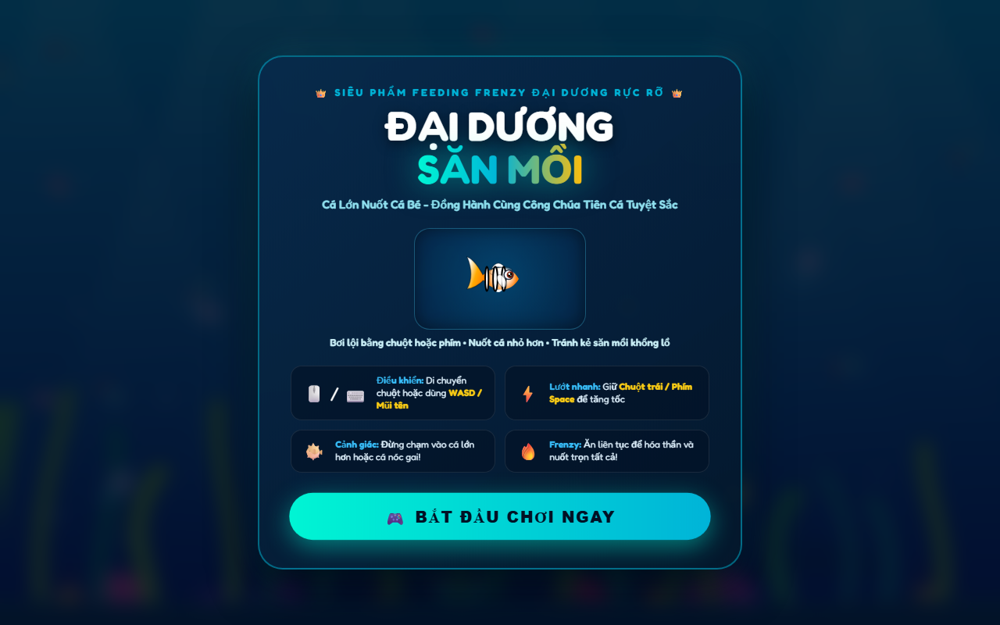

Ảnh trang chủ Daizy Wellness · Mở website ↗Website Daizy Wellness
Trải nghiệm cửa hàng Pilates & wellness với danh mục sản phẩm, trang sản phẩm, giỏ hàng và luồng thanh toán. Kèm khu vực quản trị và tư liệu bàn giao.
HỒ SƠ NĂNG LỰC · DIGITAL MARKETING & NỘI DUNG SỐ
Ứng viên Digital Marketing với các dự án thực hành về lập kế hoạch nội dung, phát triển kênh mạng xã hội, sản xuất video và xây dựng website. Sản phẩm mẫu và tư liệu triển khai được đính kèm theo từng dự án.
 FEATURED VISUAL · DAIZY WELLNESS ↗
FEATURED VISUAL · DAIZY WELLNESS ↗
Chiến lược nội dung · Sản xuất sáng tạo · Kể chuyện bằng hình ảnh · Web & AI workflow
DỰ ÁN TIÊU BIỂU · 01—06
Sắp xếp theo nhóm năng lực để nhà tuyển dụng dễ xem và đối chiếu.

Ảnh trang chủ Daizy Wellness · Mở website ↗Trải nghiệm cửa hàng Pilates & wellness với danh mục sản phẩm, trang sản phẩm, giỏ hàng và luồng thanh toán. Kèm khu vực quản trị và tư liệu bàn giao.

ẢNH CHỤP GAME THỰC TẾ · BẤM ĐỂ CHƠI ↗Game trình duyệt tập trung vào vòng lặp chơi dễ nắm bắt, phản hồi trực quan và trải nghiệm tương tác.
Dự án TVC sản phẩm, kể câu chuyện bằng hình ảnh, nhịp dựng và điểm nhấn ánh sáng.
Phim hoạt hình kể chuyện gia đình qua không gian bữa cơm và những khoảnh khắc gần gũi.

Ấn phẩm khai trương với thông điệp ưu đãi, hình ảnh món ăn và thông tin cửa hàng được phân cấp rõ ràng.
/3. Ảnh chụp kết quả kênh/TikTok-2-Chi-So-View-Va-Bai-Dang.jpg) HÀO QUANG
HÀO QUANGXây dựng concept kênh và nội dung video ngắn theo phong cách wellness; tư liệu có ảnh chụp trang kênh và chỉ số bài đăng.
CONTENT SYSTEM · DAIZY WELLNESS
Từ định hướng nội dung đến đo lường và hoàn thiện hồ sơ — mỗi bước có bản xem trực tuyến và tài liệu Word.

Bộ tài liệu thể hiện cách hệ thống hóa chiến lược, kế hoạch, sản xuất và tối ưu nội dung cho thương hiệu wellness.
Chiến lược nội dung và định vị thương hiệu.
Mở skill ↗Word ↓Lịch nội dung và cấu trúc triển khai.
Mở skill ↗Word ↓Ngân hàng ý tưởng và hướng sáng tạo.
Mở skill ↗Word ↓Sản xuất nội dung cùng định hướng hình ảnh.
Mở skill ↗Word ↓Kịch bản nội dung và cấu trúc storyboard.
Mở skill ↗Word ↓Lựa chọn kênh và kế hoạch tăng trưởng.
Mở skill ↗Word ↓Đo lường và vận hành hệ thống nội dung.
Mở skill ↗Word ↓Rà soát và đóng gói hồ sơ dự án.
Mở skill ↗Word ↓PRESENTATION & STRATEGY
Tài liệu trình bày chiến lược digital, hành động kênh và đo lường nội dung.
Bộ slide lật trang · bản trình chiếu trên trình duyệt
Mở slide ↗01 · POWERPOINTTệp PowerPoint của bộ slide chiến lược Daizy Wellness
Tải PPTX ↓02 · AI CONTENT OSSlide về đo lường, chẩn đoán và vận hành AI Content OS
Mở PDF ↗02 · POWERPOINTTệp chỉnh sửa được của bài trình bày AI Content OS
Tải PPTX ↓LET’S WORK TOGETHER
/3. Ảnh chụp kết quả kênh/TikTok-1-Tong-Quan-Kenh-Hao-Quang-Mau-Tim.jpg)